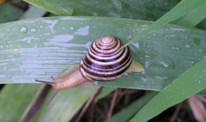

Haarlem Quiz Bowl
What is Quiz Bowl, and Why Should I Join?
 Quiz bowl is an academic competition resembling the popular game show Jeopardy! It is played between two teams of 1-4 players which earn points by answering questions in various subjects, like science, history, literature, and fine arts. There are two types of questions in quiz bowl - tossups and bonuses. Tossups are open to both teams and consist of progressively harder clues about a specific answer. The first player who knows the answer buzzes in, and if they're right, their team gets 10 points. If they're wrong, their team loses 5 points and can't buzz again on on the same question. The winning team for each tossup then receives 3 bonus questions, each worth 10 points, that they can work together to answer. After 20 tossups, the team with more points wins.
Quiz bowl is an academic competition resembling the popular game show Jeopardy! It is played between two teams of 1-4 players which earn points by answering questions in various subjects, like science, history, literature, and fine arts. There are two types of questions in quiz bowl - tossups and bonuses. Tossups are open to both teams and consist of progressively harder clues about a specific answer. The first player who knows the answer buzzes in, and if they're right, their team gets 10 points. If they're wrong, their team loses 5 points and can't buzz again on on the same question. The winning team for each tossup then receives 3 bonus questions, each worth 10 points, that they can work together to answer. After 20 tossups, the team with more points wins.
Quiz bowl is played from the middle school to the college level. High school quiz bowl is extremely popular, with thousands of teams competing in numerous local and regional tournaments every year to qualify for the two national championships - The High School National Championship Tournament (HSNCT), run by National Academic Quiz Tournaments (NAQT), the and National Scholastics Championship (NSC), run by The Partnership for Academic Competition Excellence (PACE). NAQT also hosts the MSNCT for the top middle school teams around the country.
There are many reasons to participate in quiz bowl. The simplest one is that it's a fun way to test your knowledge and learn more about many topics. It also develops important skills such as teamwork, concentration, listening, and effective study techniques. Seriously, you need to memorize way more -censored- than they teach at school so ap classes shouldn't be a problem.
-- A message from Eric Chen, Co-Vice President
Why chosing Quiz Bowl?, A Message From the Head Founder
 Quiz Bowl is simply the fastest growing club on campus. Started in 2013, the club has now over 25 active members and have 3 teams that are competing on a regular basis. In Northern California, we see regularly 30 teams per tournament we go to coming as far as from the Sacramento Area. We even saw teams from Southern California.The most remarquable feat is that we were able to participate to the very prestigious High School National Championship Tournament in our first year of activity. We ended up finishing 174 out of 272.
Dougherty Valley Quiz Bowl has grown steadily over the past year and has held several prestigious awards and rankings. Our club is a very vibrant community where everyone and anyone can mesh in in order to talk about subjects they like, while learning about several facts. Quiz Bowl is also quite education, with a syllabus drawn from high school educational syllabus, thus making a student quite versatile in learning.
-- From Sui Feng Xu, your Co-President